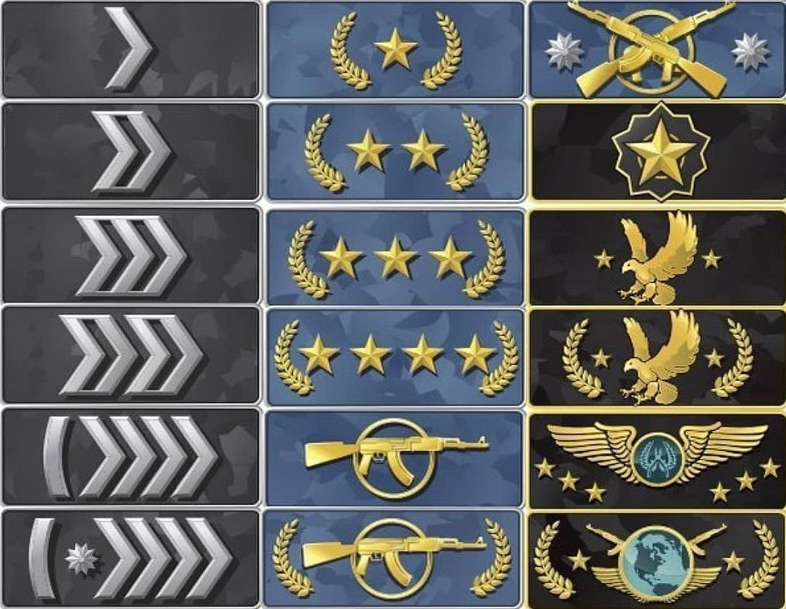
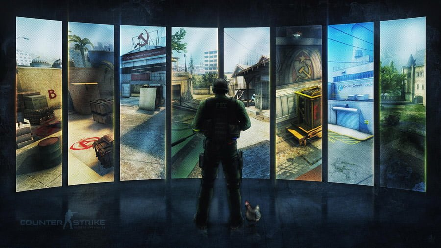
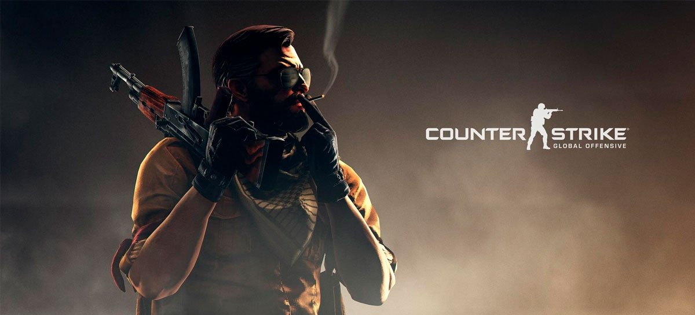
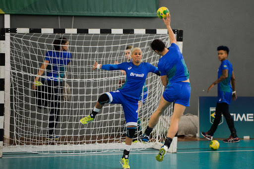
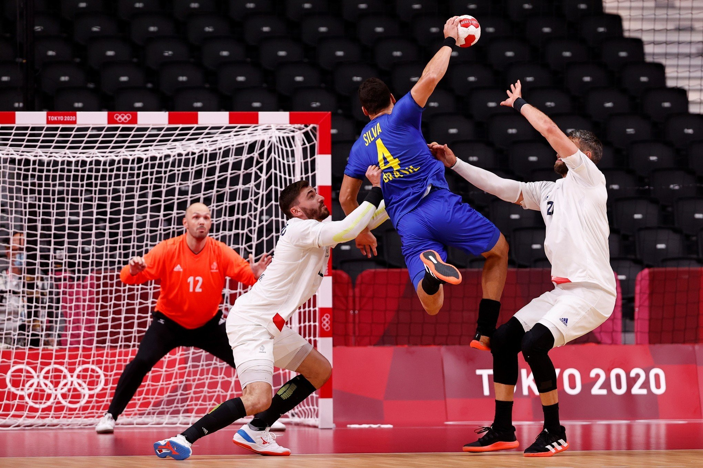
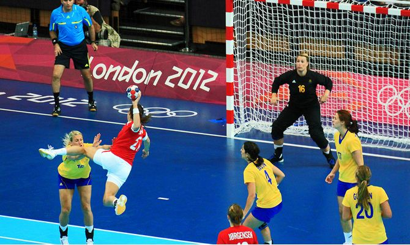
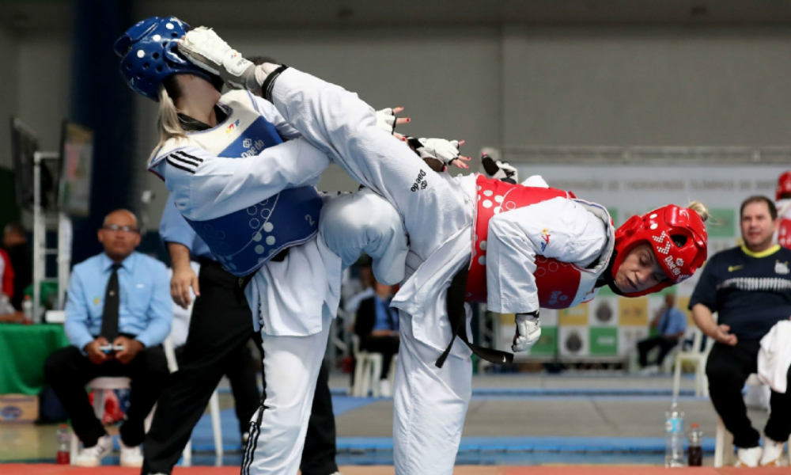
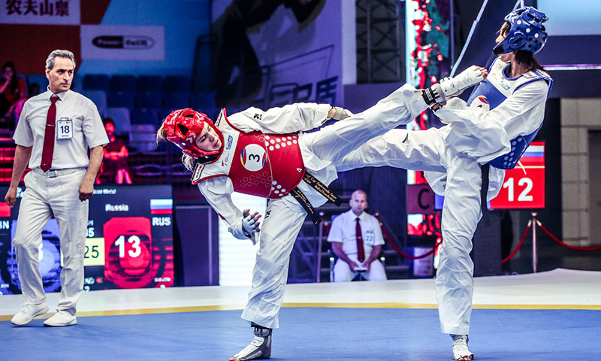
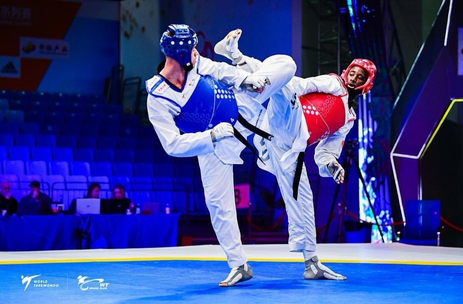

Counter-Strike: Global Offensive
Meu primeiro e princpal hobbie é jogar Counter-Strike: Global Offensive, mais conhecido como CS:GO jogo ele por 5 anos, e nos tempos vagos tiro algumas horinhas / noites para jogar e me distrair, ele tem vários modos de jogo, porém o mais jogado e conhecido é o modo competitivo, que funciona da seguinte maneira, lado CONTRA TERRORISTA vs TERRORISTA, onde o lado TR(terrorista) tenta plantar a bomba e o lado CT(contra terrorista) tenta impedir que isso aconteça, se ocorrer do TR plantar a bomba cabe ao lado CT desarmar quanto antes para que ela não exploda e eles percam o round são 30 rounds, divido em 15 rounds cada lado(CT e TR), assim cada um passando a ter a experiencia como TR e CT num modo de jogo onde é 5 x 5
Patentes do jogo
Mapas do jogo
Jogo
Mais informações sobre o jogo
Handebol
Jogo Handebol desde os meus 13 anos de idade, parei no início da pandemia logo depois disso nunca mais retornei ao esporte, comecei a faculdade e desde então tive que largar a modalidade, é um esporte que eu gosto bastante, ja fui em varias competições e ganhei parte deles tambem, fez parte do meu crescimento e aprendizagem, desde então sempre quando tem amistoso ou jogo treino eu ainda procuro jogar e estar no meio do esporte


Mais informações sobre o esporte
Taekwondo (TKD)
Treinava Taekwondo desde 2016 na cidade de Marechal Cândido Rondon-PR na academia da ACDR comecei a treinar apenas por querer saber mais sobre a modalidade, no inicio não gostei muito mas no final acabou sendo minha paixão, parei de treinar por conta da faculdade, pois os treinos eram todos noturno então não tinha mais como dar sequência na modalidade


Mais informações sobre o esporte